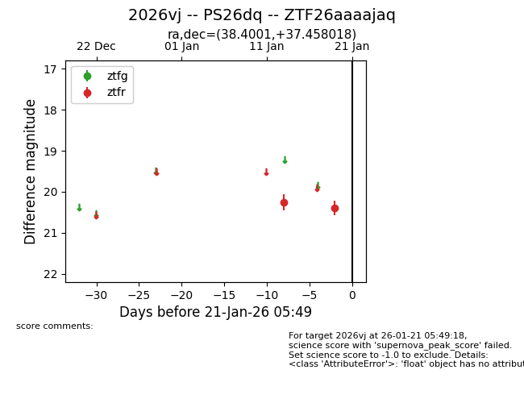
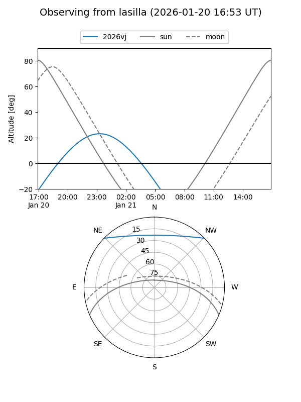
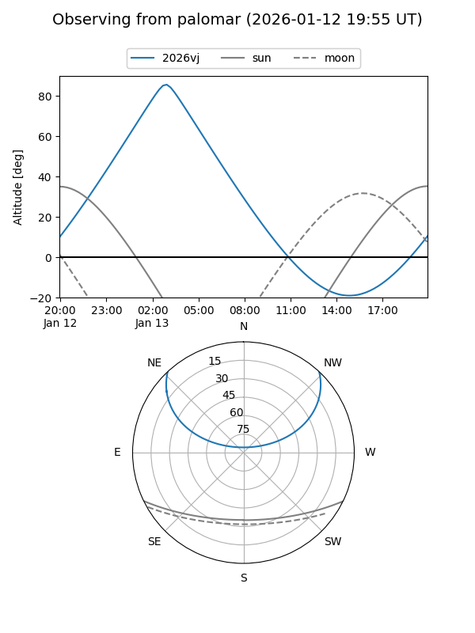

2026vj
Target 2026vj at 2026-01-13 05:35
Aliases and brokers:
FINK: link
Lasair: link
ALeRCE: link
TNS: link
YSE: link
alt names
ZTF26aaaajaq (ztf,fink_ztf)
2026vj (tns,yse)
PS26dq (panstarrs)
Coordinates:
equatorial (ra, dec) = 38.4001,+37.45802
equatorial (HMS+DMS) = 02:33:36.03,+37:27:28.87
galactic (l, b) = (144.4541,-21.10725)
Flags:
Photometry:
last ztfr=20.26
1 ztfr detections
Lightcurve

Visibility


Additional plots